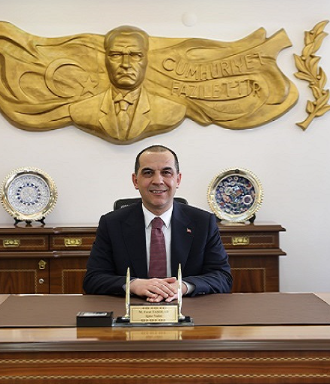

Şehir Yönetimi
Mehmet Nuri GÜNEŞ
Iğdır Belediye Başkanı01.01.1952 yılında Iğdır’da doğdu. İlk ve orta öğrenimi ile lise eğitimini Iğdır’da tamamladı. Siyasi hayatı 1991 yılında başladı. İl ve İlçe Başkanlığı olmak üzere 7 yıl boyunca genel merkez yöneticiliğinde parti meclis üyesi, merkez yürütme üyeliği ve genel saymanlık görevlerinde bulundu. 1995-1999 ve 2002 yıllarında 3 kez milletvekili olarak seçildi. Fakat %10’luk baraj diliminden dolayı görevini temsil etme hakkı verilmedi. 2009 yılında yapılan yerel seçimler sonucunda Iğdır Belediye Başkanlığına seçildi.2009 yılında yapılan yerel seçimler sonucunda Iğdır Belediye Başkanlığına seçildi. 31 Mart 2024 tarihinde yapılan yerel seçimler sonucunda yeniden Iğdır Belediye Başkanlığına seçildi. Mehmet Nuri GÜNEŞ evli ve üç çocuk babasıdır. Üç tane kitabı bulunmaktadır. Bu kitaplardan iki tanesi Türkçe bir tanesi Kürtçe dillerinde yazılmıştır. Evli ve üç çocuk babasıdır.

Fırat TAŞOLAR
Iğdır ValisiM. Fırat TAŞOLAR, 18 Şubat 1981 tarihinde Kahramanmaraş’ta doğdu. Babasının memuriyeti nedeniyle ilk ve orta öğrenimini Türkiye’nin çeşitli illerinde tamamladı.Kayseri Tomarza ve Bartın Ulus ilçelerinde Kaymakam Vekili olarak görev yaptı. 91’inci Dönem Kaymakam Adaylığı Kurs Programı’nı başarıyla tamamlayarak 2007 yılında Konya ili Emirgazi ilçesine Kaymakam olarak asaleten atandı. İçişleri Bakanlığının 2009 yılı kararnamesiyle Karabük ili Ovacık ilçesine, 2012 yılı ararnamesiyle Erzurum ili Aşkale ilçesine Kaymakam olarak atandı. İçişleri Bakanlığının 2015 yılı kararnamesiyle İçişleri Bakanlığı İller İdaresi Genel Müdürlüğü Şube Müdürlüğüne, 2017 yılında Daire Başkanlığına, 2022 yılında ise Göç İdaresi Başkanlığı Yönetim Hizmetleri Genel Müdürlüğüne atandı. 2023–2026 yılları arasında Çankırı Valisi olarak görev yaptı. 6 Ocak 2026 tarihli ve 2026/1 sayılı Cumhurbaşkanlığı Kararnamesi ile Iğdır Valisi olarak atandı.

Aziz GÜN
Milli Eğitim Müdürü01 Ocak 1972 tarihinde Pertek’te doğdu. İlköğrenimini Kemah Oğuz Köyü İlkokulu’nda; orta öğrenimini Erzincan Kazım Karabekir Lisesi’nde; yüksek öğrenimini ise Erzurum Atatürk Üniversitesi İlahiyat Fakültesi’nde tamamladı. 18 Kasım 1992 tarihinde Erzincan Sümer Ortaokulu’nda Din Kültürü ve Ahlak Bilgisi öğretmeni olarak göreve başladı. Sırasıyla Erzincan İmam-Hatip Lisesi ve Sabahat Hanım Anadolu Lisesi’nde müdür yardımcısı; Erzincan Ulalar Lisesi, Erzincan Anadolu Lisesi, Erzincan Hürriyet Otelcilik ve Turizm Meslek Lisesi ve Erzincan Anadolu Öğretmen Lisesi’nde okul müdürü olarak görev yaptı. 14/01/2013-24/01/2014 tarihleri arasında Erzincan İl Milli Eğitim Müdürlüğü İnsan Kaynakları Hizmetleri Birimi Şube Müdürlüğü görevini üstlendi. 24/01/2014 tarihinde Erzincan İl Milli Eğitim Müdürü olarak atandı. 9 yıl bu görevini yerine getirdikten sonra Milli Eğitim Bakanlığında Eğitim Uzmanı olarak görevine devam etti. Ardından 31 Mayıs 2024 tarihinde Iğdır İl Milli Eğitim Müdürü olarak göreve başladı halen bu görevini sürdürmektedir. Evli ve 3 çocuk babasıdır.